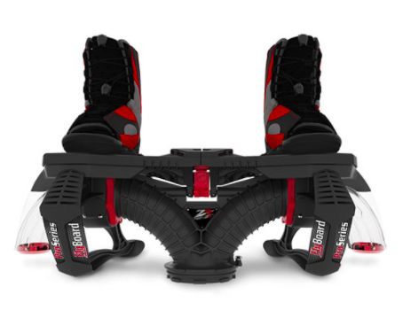

MDO project
Multidisciplinary Design Optimization project (2020) to optimize the geometry of a water jetpack's hose by maximizing thrust (fluids) while minimizing internal stresses (structures). Used direct and adjoint MDF approaches along with an SQP damped BFGS optimizer.